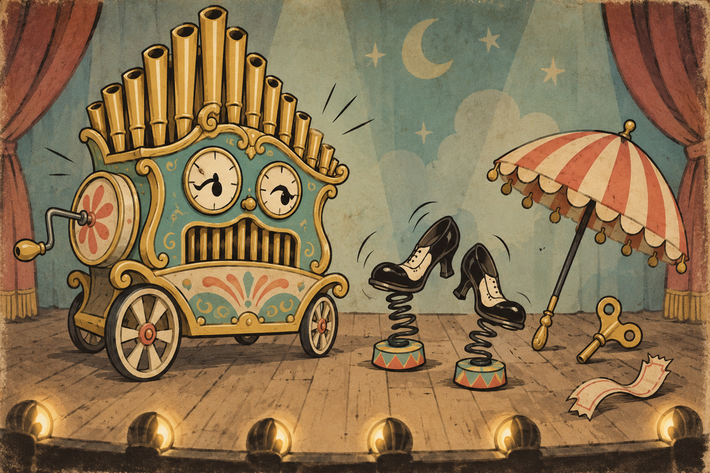

01 · equipment-cards
STYLE SPECIMEN · Cuphead (2017 base game; separate from The Delicious Last Course)
Jitterbug Jamboree
Bold, elastic, theatrical, and print-inspired. These are editable primitives, not a finished screen.

02 · shop-counter
Purchase placard
Purchase placard
A price tag, stock state, and explicit buy action with a textual affordability reason.
FICTIONAL SAMPLE · COST SHOWN BEFORE CONFIRM03 · level-results
Grade seal
Grade seal
One oversized letter grade with supporting time and objective marks, never animation alone.
Specimen only; nothing has been committed.